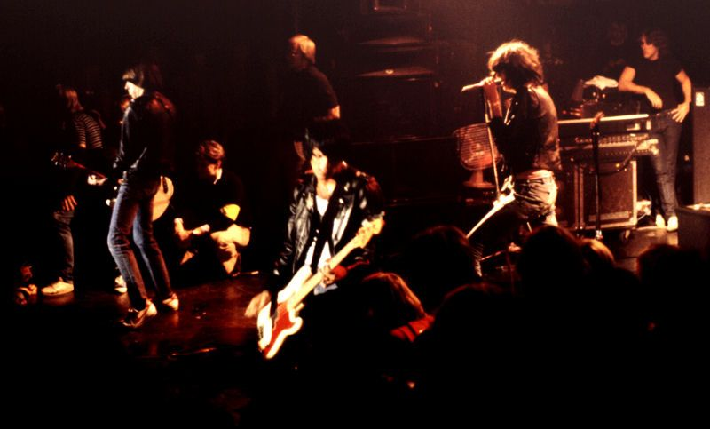
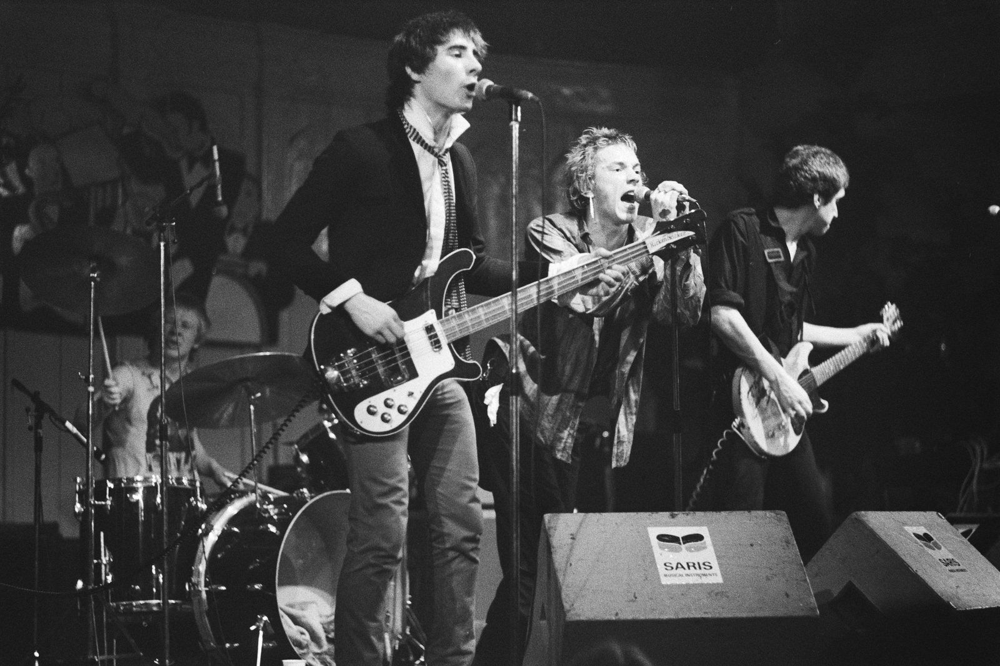
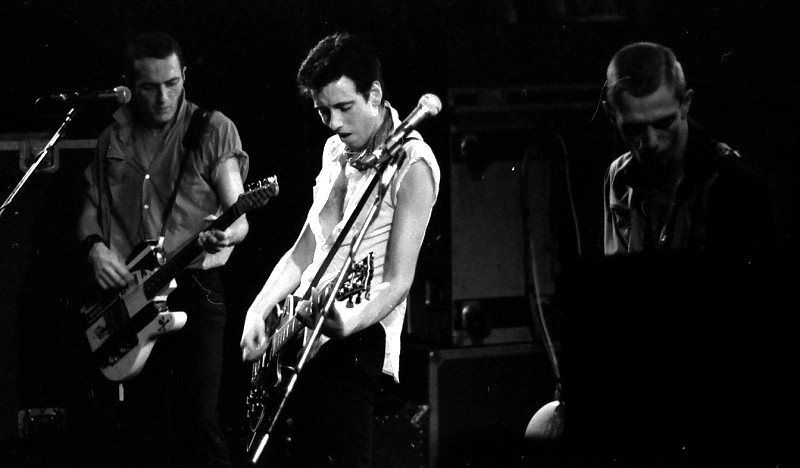

1976 年 6 月 4 日，英格兰曼彻斯特，一个叫“小自由贸易厅”的地方。
台上是一支刚组建不久、没什么人听说过的伦敦乐队，叫 Sex Pistols。台下据说只有几十个人，稀稀拉拉地站着。
这场演出后来成了摇滚史上最有名的“没几个人看过”的演出。传说中，台下有后来组建 Joy Division 的两个年轻人、后来成为 The Smiths 主唱的 Morrissey，还有好几个当晚回家就决定组乐队的人。人们后来半开玩笑地说：那天看过演出的人，几乎每一个都去组了乐队。
这就是朋克的力量。它的意思不是“你听我弹得多好”，而是“你看，我都行，你也行”。
朋克和金属常被放在一起说，因为它们听起来都“又吵又重”。可仔细一看，这两个家族的价值观几乎相反：朋克反对技巧，金属崇拜技巧。这一章只讲朋克，金属留给下一章。
和布鲁斯那一章一样，我先讲朋克为什么会出现，再把它拆成几个零件：三个和弦、快、吵、自己动手、看起来的样子。每个零件都有可以点开听的合成示例。然后去 1976 年的纽约和伦敦，最后看看它留下了哪些后代，包括你可能在酒吧里、在《NANA》里听到过的那些声音。
01 / why为什么会有朋克
摇滚变“贵”了
在布鲁斯那一章最后，我们看到摇滚乐从一群穷孩子手里诞生：三个和弦、一把电吉他、一台音箱。可是到了 1970 年代中期，摇滚已经变成了另一种东西。
- 歌越来越长：前卫摇滚（progressive rock）追求宏大的结构，一首歌动辄十几二十分钟，一整面唱片只放一首。英国乐队 Yes 1972 年的《Close to the Edge》长达 18 分 43 秒
- 技术越来越难：吉他手比拼独奏速度，键盘手搬上一整排合成器，鼓手打十分钟的独奏。听众开始仰视台上的人
- 舞台越来越远：大乐队在体育场演出，票价昂贵，舞台布景豪华，乐手住豪宅、坐私人飞机。摇滚从“我们的音乐”变成了“他们的表演”
对一个十几岁、没钱、没学过音乐的年轻人来说，这样的摇滚是遥不可及的。你买不起他们用的设备，也弹不出他们的独奏，更不可能站上体育场的舞台。
年轻人没有前途
与此同时，1970 年代中后期的英国陷入了经济困境：通货膨胀高企，工厂关闭，罢工不断，青年失业严重。1978 到 1979 年冬天，大规模罢工让垃圾在街上堆积，被称为“不满之冬”。很多工人阶级家庭的孩子看不到任何出路。
大西洋对岸的纽约也好不到哪里去。1975 年，纽约市政府几乎破产，治安恶化，大片街区破败不堪，房租却很便宜，于是吸引了大量没钱的艺术家、诗人和乐手。
这两种情绪合在一起，一边是对“摇滚贵族”的厌烦，一边是对现实的愤怒和无聊，就是朋克的土壤。
朋克的“祖先”
朋克不是凭空出现的。1960 年代后期到 1970 年代初，已经有一些乐队在走“简单、粗糙、吵”的路线，后来被称为“原型朋克”（proto-punk）：
- 车库摇滚：1960 年代美国各地的年轻人在自家车库里组乐队，技术粗糙但能量十足
- The Velvet Underground（纽约）：噪音、单调的重复、写城市阴暗面的歌词
- The Stooges（底特律）：主唱 Iggy Pop 在台上自残、跳进观众堆里，音乐原始而狂暴
- MC5（底特律）：极其响亮、带着政治口号的硬摇滚
- New York Dolls（纽约）：化着浓妆的街头摇滚。他们后来的经纪人 Malcolm McLaren 回到伦敦后，组建了 Sex Pistols
02 / three chords三个和弦：强力和弦
朋克最常被提到的一句话是“三个和弦就够了”。这里的“和弦”有一个专门的名字：强力和弦（power chord）。理解了它，你就理解了朋克（和后来的金属）听起来为什么是那个样子。
少了一个音的和弦
在布鲁斯那一章我们说过，和弦是几个音同时响起。最普通的和弦由三个音组成：根音、三音、五音。其中三音决定了和弦是大调（明亮）还是小调（忧伤）。
强力和弦把三音拿掉了，只剩根音和五音（通常再加一个高八度的根音）。没有了三音，它就既不明亮也不忧伤，只剩一种中性的、坚硬的“力量感”。
为什么朋克偏爱它
- 好学：在吉他上，强力和弦只用两三根手指，而且手形固定。学会一个手形，在指板上上下平移，就能弹出所有的强力和弦。一个下午就能学会，这正是“谁都能玩”的前提
- 失真之后依然清楚：吉他接上失真效果后，声音会变“脏”、变厚。一个完整的和弦里音太多，失真之后会糊成一团；强力和弦只有两个音，而且是最和谐的五度关系，失真之后反而又硬又清楚
- 不分大小调：同一组强力和弦，配上愤怒的歌词就是愤怒，配上欢快的旋律就是欢快，非常灵活
对比第二个和第三个：完整和弦一失真就“糊”了，有一种刺耳的嗡嗡声；强力和弦失真后干净、坚硬。这就是朋克和金属吉他声音的基础。
全部往下扫
Ramones 的吉他手 Johnny Ramone 有一个出了名的习惯：他几乎只用“下拨”，也就是每一下都从上往下扫弦，以极快的速度连续不停。一般吉他手会上下交替来减轻负担，但只往下扫能让每一下都同样有力，形成一种机关枪一样平均、密集的声音。这也成了朋克吉他的标志性弹法。
三个和弦，写一首歌
现在来试试：选一组和弦进行，听听三个强力和弦配上鼓和贝斯，能不能变成一首“朋克歌”。点“播放”时，鼓手会先敲四下鼓棒数拍子，这是朋克现场最经典的开场方式。
A、D、E。最传统的三个和弦，和布鲁斯同一套“家、离家、想回家”。
E、D、A。车库摇滚和朋克最爱的走法，听起来更“野”。
E、B、C♯m、A。流行朋克的标配，也是流行歌最常用的“四和弦”。
同样是三四个和弦，第一组听着像加速的老摇滚，第二组更粗野，第三组一下子就有了 2000 年代流行朋克的“青春感”。和弦顺序本身就带着情绪。
03 / fast快：速度与鼓
朋克的第二个特点是快。音乐的速度用 BPM（每分钟多少拍）来衡量。大部分流行歌在 90 到 130 之间，Chuck Berry 那种早期摇滚大约 160 多，而朋克常常在 170 以上，硬核朋克甚至超过 200。
歌也变短了
速度快，加上不要独奏、不要长前奏，朋克歌自然就短。Ramones 的第一张专辑有 14 首歌，加起来不到 30 分钟。和本章开头说的前卫摇滚放在一起比，差别一目了然：
鼓：从摇滚到朋克到硬核
鼓是速度的发动机。看下面三种鼓型，每一格是一个八分音符：
- 基本摇滚：踩镲每个八分音符都打，底鼓在第 1、3 拍，军鼓在第 2、4 拍。几乎所有摇滚乐的基础
- 朋克：同样的结构，速度更快，踩镲常换成更吵的叮叮镲或强音镲，底鼓更密
- 硬核（skank beat）：底鼓和军鼓一个接一个交替，每个八分音符都在打，像一列失控的火车
注意听硬核的鼓：底鼓和军鼓“咚、哒、咚、哒”一刻不停地交替，几乎没有喘息的空间。
04 / loud吵：声音与制作
失真、音箱和“毛边”
布鲁斯那一章里，芝加哥的乐手为了在嘈杂的酒吧里被听见，把音箱开大，结果声音“发毛”。朋克把这种毛边推到了极致：吉他接上便宜的失真效果器或直接把音箱开到最大，声音粗糙、刺耳，像砂纸一样。
粗糙也是一种选择
1970 年代的大乐队在昂贵的录音棚里花几个月录一张专辑，每一个音都打磨得干干净净。很多朋克乐队则只花几天，甚至一两天就录完，钱不够是一个原因，但更重要的是态度：朋克认为粗糙才是真实的，太干净的声音反而显得假。后来甚至出现了专门用简陋设备录音的“lo-fi”（低保真）美学。
“车库”版本切掉了高音和低音，加上失真和磁带嘶嘶声，声音像是从一台旧录音机里传出来的。很多人反而觉得这样更有冲击力。
唱，还是喊
朋克歌手大多没受过声乐训练，也不想受。他们不追求音准和音色，而是用近乎喊叫的方式把歌词“吐”出来。Sex Pistols 的主唱 Johnny Rotten 那种带着嘲讽的尖利嗓音，The Clash 的 Joe Strummer 那种沙哑的嘶吼，都和“唱得好听”毫无关系。
朋克还有一个标志性的声音：团唱（gang vocals）。乐队成员和台下观众一起喊同一句短短的口号，像足球场上的助威。这种“所有人一起喊”的感觉，正是朋克想要的：台上和台下没有距离。
合成器发不出真正的字，这里只模拟音色的差别：唱的时候声音圆润、带颤音；喊的时候声音被“压扁”、发毛；团唱则是好几个略有差别的声音叠在一起。
05 / do it yourselfDIY：自己动手
如果说三个和弦、快、吵是朋克的声音，那么 DIY（do it yourself，自己动手）就是朋克的灵魂。它最大的遗产也许根本不是某一首歌，而是一种做事的方式：不等别人给机会，自己创造机会。
自己办杂志
主流音乐杂志不报道朋克，朋克迷就自己办。1976 年，伦敦一个银行职员 Mark Perry 用复印机做出了一本叫《Sniffin' Glue》的小杂志（fanzine，粉丝杂志），手写标题、打字机排版、错别字随处可见，却卖出了上万份。
另一本朋克小杂志《Sideburns》在 1977 年画过一张后来被无数次引用的图：三个吉他和弦的按法示意，配上一句大意是“这是一个和弦，这是另一个，这是第三个，现在去组乐队吧”的话。这几乎成了朋克精神的标语。
自己发唱片
大唱片公司不愿意签朋克乐队，朋克乐队就自己发。1977 年 1 月，曼彻斯特的 Buzzcocks（就是开头那场演出的组织者）自己掏钱、借钱，发行了一张 EP《Spiral Scratch》，成为英国最早的独立发行朋克唱片之一。之后，一批独立唱片公司纷纷出现：
- 英国：Stiff Records（1976）、Rough Trade（从唱片店起家）、曼彻斯特的 Factory Records
- 美国：Black Flag 的吉他手 Greg Ginn 创办的 SST，华盛顿的 Dischord（由 Minor Threat 的主唱 Ian MacKaye 等人创办）。这些厂牌坚持低价、自主，乐队自己订巡演、自己卖唱片
这套“独立”的玩法后来演变成了整个独立音乐（indie）产业。今天在网上自己发歌、自己做宣传的音乐人，走的仍然是朋克开出来的这条路。
06 / the look样子：朋克的视觉
朋克不只是声音，也是一种“看起来的样子”。很多人第一次接触朋克，是先被它的样子吸引的。
穿
- 撕破的衣服和别针：故意撕破 T 恤、用别针别起来，既是没钱，也是挑衅
- 皮夹克：Ramones 四个人统一的黑色皮夹克加破牛仔裤，成了纽约朋克的制服
- 莫西干头：竖起来的彩色鸡冠头，大多是 1980 年代以后才流行的
- Vivienne Westwood：她和 Malcolm McLaren 在伦敦国王路开了一家叫 SEX 的服装店，卖带着挑衅图案的 T 恤、绑带裤和皮衣。Sex Pistols 的成员就在这家店周围被凑到一起。Westwood 后来成为英国最重要的时装设计师之一
看
朋克的平面设计同样“粗糙”：从报纸杂志上剪下字母，像绑匪的勒索信一样东拼西凑；复印机反复复印出来的高反差黑白图；荧光色的色块。Sex Pistols 的唱片封套就是这种风格的代表，由艺术家 Jamie Reid 设计。你在本章标题里看到的歪斜色块和“剪贴”字，用的就是这种视觉语言。
日本漫画《NANA》也和朋克有关。《NANA》的女主角之一大崎娜娜是朋克乐队 Blast 的主唱，偶像是 Sex Pistols 的贝斯手 Sid Vicious，穿的大多是 Vivienne Westwood 的设计。故事里的两支乐队，正好对应朋克和精致商业摇滚之间的对立。不过动画和电影里真正发行的歌，大多是制作精良的日式流行摇滚，和 1970 年代那种粗糙的朋克并不一样。第 10 节会再说到。
07 / NYC × London两座城市：纽约与伦敦
朋克几乎同时在纽约和伦敦两座城市出现，两边互相影响，但气质很不一样。
纽约：艺术学校与地下酒吧
纽约朋克的大本营是曼哈顿包厘街 315 号的一家小酒吧 CBGB。老板 Hilly Kristal 1973 年开这家店时，本来想做乡村、蓝草和布鲁斯音乐（CBGB 就是这三种音乐英文的缩写），结果来的全是没人要的年轻乐队。他定了一条规矩：只能演自己写的歌，不许翻唱。
纽约的朋克圈子很多元，很多人来自艺术学校或诗歌圈：
- Patti Smith：诗人出身，1975 年的专辑《Horses》把诗歌朗诵和粗糙的摇滚结合在一起
- Television：两把吉他交织的长段落，后来被归为后朋克的先驱
- Talking Heads：神经质、带着放克律动的艺术摇滚
- Blondie：把朋克和流行、迪斯科结合，后来成了排行榜冠军
- Ramones：最纯粹、最简单的朋克，1976 年的同名首张专辑被普遍视为朋克的起点

伦敦：愤怒与丑闻
1976 年 7 月 4 日，Ramones 第一次到伦敦演出。据说台下站着不少后来英国朋克乐队的成员，他们发现原来歌可以这么短、这么快、这么简单。
伦敦朋克比纽约更愤怒、更政治化，也更像一场社会事件：
- Sex Pistols：1976 年 11 月发行第一张单曲《Anarchy in the U.K.》。12 月 1 日，他们上了一档电视直播节目，在主持人的挑逗下当众说了脏话。第二天，英国小报头版大字写着“The Filth and the Fury!”（下流与狂怒），朋克一夜之间成了全国性的道德恐慌
- The Damned：1976 年 10 月发行《New Rose》，被认为是英国第一张朋克单曲
- The Clash：比 Sex Pistols 更关心政治和社会，后来把雷鬼、斯卡、山区摇滚都融了进来，被称为“唯一重要的乐队”
- Buzzcocks：本章开头那场演出的组织者，把朋克和好听的流行旋律结合，是后来流行朋克的祖师爷之一

Sex Pistols 的两年半
- 1975组建
在 Malcolm McLaren 和 Vivienne Westwood 的服装店周围，几个年轻人凑成了乐队。
- 1976.11《Anarchy in the U.K.》
第一张单曲；12 月的电视脏话事件让他们一夜成名，也让很多演出被取消。
- 1977.2Sid Vicious 加入
原贝斯手 Glen Matlock 离队，换上了几乎不会弹贝斯、但形象完全“朋克”的 Sid Vicious。
- 1977.5《God Save the Queen》
正值英国女王登基 25 周年庆典，这首讽刺王室的歌被 BBC 禁播，很多商店拒绝出售，却仍冲到排行榜第二名。
- 1977.10唯一一张录音室专辑
登上英国专辑榜第一。
- 1978.1解散
在混乱的美国巡演最后一站之后，乐队解散。一年后，Sid Vicious 因吸毒过量去世，年仅 21 岁。
Sex Pistols 只存在了两年半，正式发行的录音室专辑只有一张，却改变了整个英国流行文化。这本身就很“朋克”：不需要长久，不需要完美，只需要足够真实、足够响亮。

对比一下
| 纽约 | 伦敦 | |
|---|---|---|
| 大本营 | CBGB、Max's Kansas City 等地下酒吧 | 国王路的服装店、各地小俱乐部 |
| 参与的人 | 艺术学校学生、诗人、落魄乐手 | 工人阶级青年、失业少年 |
| 气质 | 冷静、艺术、讽刺 | 愤怒、政治、挑衅 |
| 声音 | 从极简（Ramones）到实验（Television）都有 | 更快、更吵、口号更多 |
| 代表 | Ramones、Patti Smith、Television、Talking Heads、Blondie | Sex Pistols、The Clash、The Damned、Buzzcocks |
08 / roots从布鲁斯到朋克
还记得布鲁斯那一章的实验 10 吗？我们把一段芝加哥布鲁斯提速、拉直，就变成了早期摇滚。朋克其实就是沿着这条路再往前走一步：去掉摇摆，去掉独奏，换成强力和弦，再快一点、吵一点。下面用同一个十二小节，连着听这三步：
100 BPM，shuffle 摇摆，boogie 吉他。
168 BPM，拉直成直八分，双音吉他。
192 BPM，强力和弦全部下拨，没有独奏。
这也解释了一件事：很多早期朋克乐队其实是摇滚老歌迷。Ramones 喜欢 1960 年代的流行女团和冲浪摇滚，The Clash 翻唱过雷鬼和老摇滚。朋克反对的不是摇滚本身，而是摇滚后来变成的样子。它想做的，是让摇滚回到起点。
今天在美国的酒吧里，翻唱乐队最爱演的往往就是朋克的“后代”：Blink-182、Green Day 这样的流行朋克，以及 Sublime 那种把朋克和雷鬼混在一起的“雷鬼摇滚”。它们保留了朋克的速度和能量，但旋律更好听、更适合派对。下一节就讲这些后代。
09 / after punk朋克之后
第一波朋克在 1978 年前后就基本燃尽了。但它像一颗炸弹，炸出了一大片新的音乐。几乎所有后来的“另类”“独立”音乐，都能在这里找到源头。
后朋克：从愤怒到阴郁
1978 年以后，一些乐手觉得“三个和弦”已经成了新的套路，开始往更实验、更阴暗的方向走：贝斯不再只弹根音，而是弹出旋律；吉他用清亮、有回声的音色；加入合成器；歌词转向内心和疏离感。代表有曼彻斯特的 Joy Division、伦敦的 Siouxsie and the Banshees、The Cure。后朋克又衍生出了新浪潮（new wave）和哥特摇滚。
硬核：更快、更短、更愤怒
1980 年前后，美国西海岸和华盛顿的年轻人把朋克推向极端：速度超过 200，一首歌常常不到一分钟，演出时观众在台下互相冲撞（mosh pit）。代表有洛杉矶的 Black Flag、华盛顿的 Minor Threat 和 Bad Brains、旧金山的 Dead Kennedys。Minor Threat 一首叫《Straight Edge》的歌，还催生了一种拒绝烟酒和毒品的青年亚文化。
流行朋克：好听的朋克
保留朋克的速度和吉他，配上好记、好唱的流行旋律。1990 年代，加州的 Green Day 凭专辑《Dookie》（1994）大红大紫；1999 年，Blink-182 的专辑《Enema of the State》让流行朋克成为主流。这也是今天美国酒吧翻唱乐队最爱的一类歌。
还有更多
- 垃圾摇滚（grunge）：Nirvana 的 Kurt Cobain 是朋克的忠实信徒。《Smells Like Teen Spirit》（1991）把朋克的态度和金属的厚重结合在一起
- Emo：从华盛顿硬核圈子里分出来，更强调个人情绪，2000 年代因 My Chemical Romance 等乐队流行
- Riot grrrl：1990 年代初美国西北部的女性朋克运动，代表乐队 Bikini Kill，把朋克和女性主义结合
- 雷鬼朋克、斯卡朋克：The Clash 早就开始把雷鬼混进朋克，后来的 Sublime 等乐队把这条路走成了一种派对音乐
中速、小调，贝斯弹旋律，清亮的吉他，嗵鼓为主的鼓点。
220 BPM，底鼓军鼓不停交替，十秒钟就结束。
四和弦，主歌闷音，副歌全开，一切都很“青春”。
10 / Tokyo · Beijing在日本和中国
日本：THE BLUE HEARTS 与《NANA》
日本在 1970 年代末就有了自己的朋克乐队。到了 1980 年代后期，THE BLUE HEARTS 把朋克的简单直接和日语的真诚歌词结合起来，1987 年的出道单曲《リンダリンダ》（Linda Linda）至今仍是日本几乎人人会唱的歌。
《NANA》是另一种意义上的日本朋克：它把 1970 年代伦敦朋克的符号，比如 Sid Vicious、Vivienne Westwood、挂锁项链，搬进了 2000 年代东京的青春故事里。漫画里“朋克乐队 Blast”和“精致的人气乐队 Trapnest”的对立，正好重演了朋克和摇滚贵族之间的那场冲突。如果你是通过《NANA》认识朋克的，回头去听 Sex Pistols，会发现很多细节都对得上。
中国：北京的“无聊军队”
1990 年代后期，北京出现了第一批中国朋克乐队，比如脑浊、反光镜、69、A Jerks。他们常在一家叫“嚎叫俱乐部”的小场地演出。1999 年，嚎叫唱片和京文唱片发行了一张朋克合辑，名字就叫《无聊军队》，这个名字后来成了那一代北京朋克的代称。他们唱的是城市年轻人的无聊、躁动和不满，用的仍然是那套三个和弦、快、吵、自己动手的方法。
11 / listen听：本章十二首曲目
按时间顺序听。蓝黑色按钮是 YouTube 上的官方音源，其余按钮打开搜索结果。国内收听可以点“网易云”或“QQ音乐”。
12 / practice练 · 术语表
练习 1：数和弦
听《Blitzkrieg Bop》，每当吉他的“声音块”变了，就在心里数一下。整首歌一共用了几个不同的和弦？答案比你想的少。
练习 2：数 BPM
听《Blitzkrieg Bop》和《Basket Case》，跟着军鼓拍手（第 2、4 拍），用手机计时 15 秒，数拍手次数乘以 8，就是大致的 BPM。再拿实验 03 里的三种速度对比一下。
练习 3：找朋克的“祖先”和“后代”
先听 The Stooges，再听 Ramones，再听 Green Day。三首歌跨越 25 年，问自己：哪些东西一直没变？哪些东西变了？
练习 4：用三个和弦写一首歌
打开实验 02，选一组你最喜欢的和弦进行，写两句歌词：第一句说一件让你烦的事，第二句说你打算怎么办。不用押韵，不用唱得好听，朋克从来不要求这些。
术语表
- 朋克（punk）
- 1970 年代中期在纽约和伦敦兴起的摇滚流派与亚文化：简单、快、吵、自己动手
- 原型朋克
- 1960 年代末到 1970 年代初，为朋克铺路的乐队，如 The Stooges、MC5、The Velvet Underground
- 强力和弦
- 只有根音和五音（加高八度根音）的和弦，没有三音，失真后依然清楚
- 失真
- 让吉他声音变得粗糙、厚重的效果，最早来自把音箱开到超负荷
- 下拨
- 只从上往下扫弦的弹法，每一下力度一致，声音密集平均
- BPM
- 每分钟多少拍，衡量速度的单位。朋克常在 170 以上
- skank beat
- 底鼓和军鼓在每个八分音符上交替的鼓型，硬核朋克的标志
- lo-fi
- 低保真，故意或被迫用简陋设备录音形成的粗糙声音美学
- 团唱
- 乐队成员和观众一起喊短口号的演唱方式
- fanzine
- 粉丝自己用复印机制作的小杂志
- 独立厂牌
- 不属于大唱片集团的唱片公司，朋克之后大量出现
- 后朋克
- 朋克之后更实验、更阴郁的方向，如 Joy Division、The Cure
- 硬核
- 更快、更短、更激烈的美国朋克，如 Black Flag、Minor Threat
- 流行朋克
- 朋克的速度加上流行旋律，如 Green Day、Blink-182
- mosh pit
- 演出时台下观众互相冲撞的区域